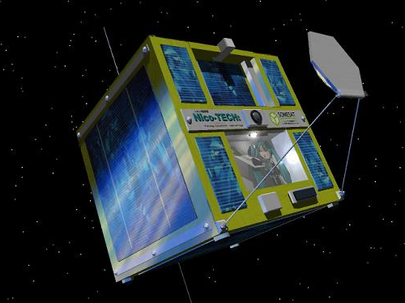

Vocaloid Wiki
Vocaloid Culture
The software became very popular in Japan upon the release of Crypton Future Media's Hatsune Miku Vocaloid 2 software and her success has led to the popularity of the Vocaloid software in general. Japanese video sharing website Niconico played a fundamental role in the recognition and popularity of the software. A user of Hatsune Miku and an illustrator released a much-viewed video, in which "Hachune Miku", a super deformed Miku, held a Welsh onion (Negi in Japanese), which resembles a leek, and sang the Finnish song "Ievan Polkka" like the flash animation "Loituma Girl", on Nico Nico Douga. According to Crypton, they knew that users of Nico Nico Douga had started posting videos with songs created by the software before Hatsune Miku, but the video presented multifarious possibilities of applying the software in multimedia content creation—notably the dōjin culture.
As the recognition and popularity of the software grew, Nico Nico Douga became a place for collaborative content creation. Popular original songs written by a user would generate illustrations, animation in 2D and 3D, and remixes by other users. Other creators would show their unfinished work and ask for ideas. The software has also been used to tell stories using song and verse and the Story of Evil series has become so popular that a manga, six books, and two theatre works were produced by the series creator. Another theater production based on "Cantarella", a song sung by Kaito and produced by Kurousa-P, was also set to hit the stage and will run Shibuya's Space Zero theater in Tokyo from August 3 to August 7, 2011. The website has become so influential that studios often post demos on Nico Nico Douga, as well as other websites such as YouTube, as part of the promotional effort of their Vocaloid products. The important role Nico Nico Douga has played in promoting the Vocaloids also sparked interest in the software and Kentaro Miura, the artist of Gakupo's mascot design, had offered his services for free because of his love for the website.

In September 2009, three figurines based on the derivative character "Hachune Miku" were launched in a rocket from the United States state of Nevada's Black Rock Desert, though it did not reach outer space. In late November 2009, a petition was launched in order to get a custom made Hatsune Miku aluminum plate (8 cm x 12 cm, 3.1" x 4.7") made that would be used as a balancing weight for the Japanese Venus space probe Akatsuki. Started by Hatsune Miku fan Sumio Morioka that goes by chodenzi-P, this project received the backing of Dr. Seiichi Sakamoto of the Japan Aerospace Exploration Agency (JAXA). The website of the petition written in Japanese was translated into other languages such as English, Russian, Chinese and Korean, and, the petition exceeded the needed 10,000 signatures necessary to have the plates made on December 22, 2009. On May 21, 2010 at 06:58:22 (JST), Akatsuki was launched on the rocket H-IIA 202 Flight 17 from the Japanese spaceport Tanegashima Space Center, having three plates depicting Hatsune Miku.
The Vocaloid software has also had a great influence on the character Black Rock Shooter, which looks like Hatsune Miku but is not linked to her by design. The character was made famous by the song "Black Rock Shooter", and a number of figurines have been made. An original video animation made by Ordet was streamed for free as part of a promotional campaign running from June 25 to August 31, 2010. The virtual idols "Meaw" have also been released aimed at the Vocaloid culture. The twin Thai virtual idols released two singles, "Meaw Left ver." and "Meaw Right ver.", sung in Japanese.